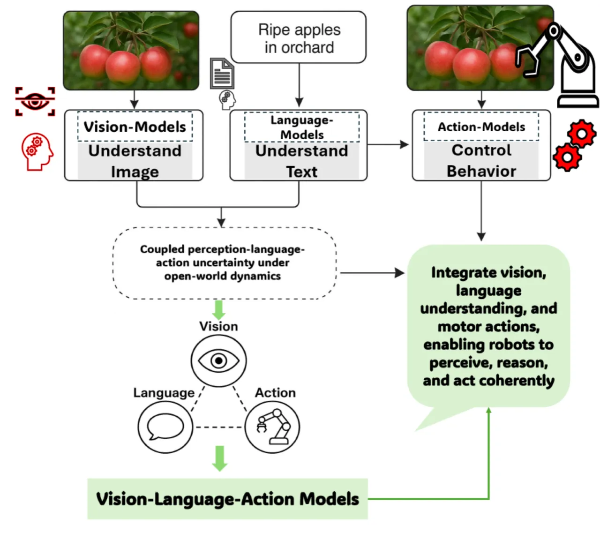
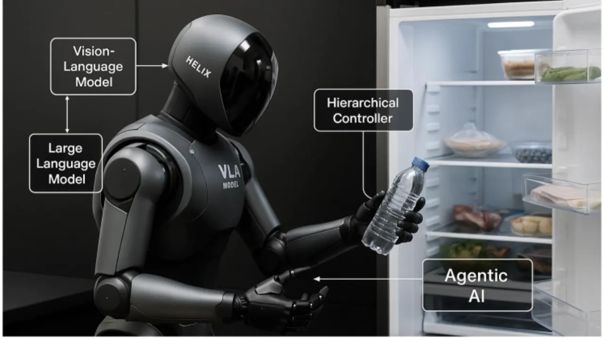
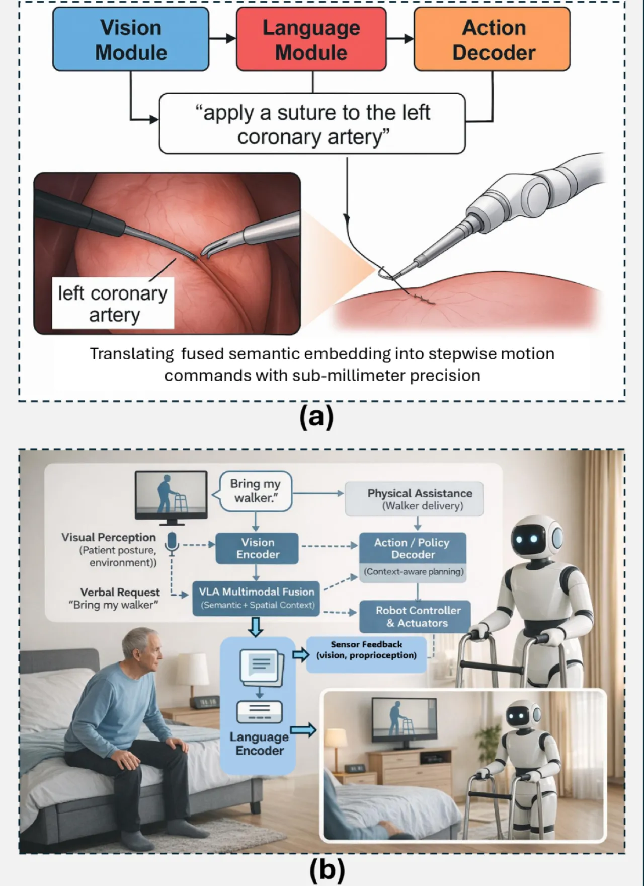
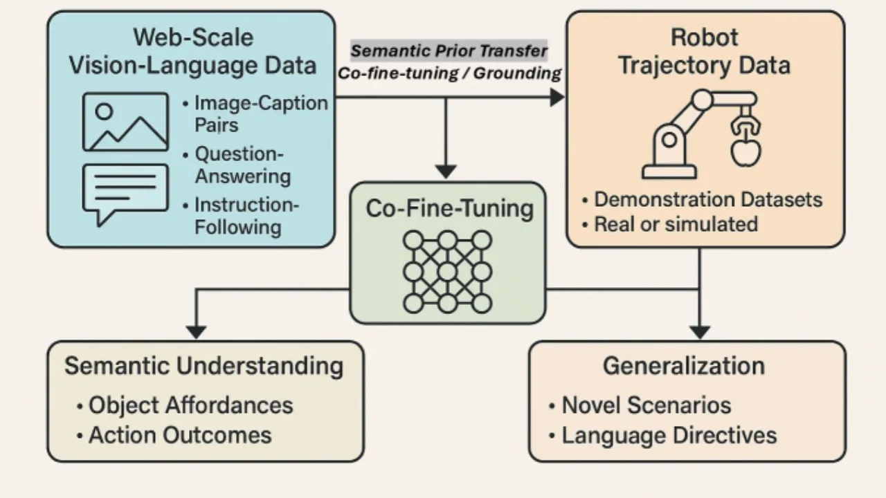

本综述系统梳理 80 余个 VLA 模型，揭示感知、语言理解与机器人动作执行如何在单一框架内统一。 研究覆盖 2022–2025 年四个演化阶段，从基础整合到跨形态泛化，并明确指出推理延迟、安全对齐、 跨形态迁移等核心挑战，以及九大未来研究方向。
传统机器人系统将视觉、语言和动作视为独立子系统分别处理。"机器人能够在视觉上识别物体、 理解文本指令或执行预定义动作，但将三者全部整合仍然极具挑战性。"VLA 模型正是为打破这一割裂局面而生—— 在单一计算框架内实现感知、语言理解与具身动作的统一。
"Integrated perception, language, and action enable adaptive, generalizable embodied intelligence." —— 论文核心主张

大型视觉-语言模型（VLM）的崛起使"将感知、理解与行动统一于单一框架"成为可能。 然而，从 VLM 到 VLA 并非简单扩展：机器人需要实时闭环控制、跨形态泛化 和安全对齐，而这些在纯语言/图像生成场景中几乎不存在。本综述正是系统梳理 这一演化路径，识别已解决与尚待攻克的问题。
本综述将 VLA 研究组织为五大主题支柱：概念基础、架构进展、应用领域、技术挑战与未来方向。 其核心是对 VLA 系统统一框架的解析——多模态输入经 tokenization 后融合，再通过自回归解码输出动作序列。
VLA 通过三类 token 统一三种模态：

视觉-语言表征在策略模块前完成融合。代表模型 EF-VLA 在组合操作任务上展现出 "20% 性能提升"。优势在于端到端联合优化，劣势是跨模态对齐难度大。
NVIDIA GR00T N1 将快速 System 1（扩散策略，10ms 延迟）与慢速 System 2（LLM 规划器）结合， 实现"比单体模型高出 17% 的成功率"和"28% 的碰撞失败率下降"。
SC-VLA 集成失败检测机制，"将任务失败率降低 35%"。通过闭环反馈在执行过程中 动态修正动作，提升鲁棒性。
LoRA adapter 等方法"将 GPU 训练时间减少 70%"，使大规模 VLA 适配特定领域 无需全参数微调，显著降低计算成本。

综述覆盖六大应用场景：人形机器人（全身操控与运动）、自动驾驶 （端到端驾驶、协同调度）、工业机器人（精密装配、灵巧操作）、 医疗机器人（精准干预、辅助护理）、精准农业（作物监测、选择性采摘） 和 GUI 代理（桌面自动化，如 ShowUI）。
综述系统梳理 2022–2025 年 45 个代表性 VLA 模型，划分为四个演化阶段，并汇总各模型的架构特点与实测指标。

| 模型 | 参数量 | 训练数据规模 | 关键指标 / 特点 |
|---|---|---|---|
| RT-1 | — | 大规模演示数据 | 97% 操作成功率（模仿学习） |
| RT-2 | 55B | 互联网规模 | 新物体性能提升 63%（DCT/BPE 动作 tokenization） |
| Octo | 93M | 80 万机器人演示（OpenX-Embodiment） | 扩散解码器，多任务泛化 |
| OpenVLA | 7B | 97 万真实机器人演示 | 优于 RT-2-X（55B）；DINOv2 + SigLIP 双编码器 |
| GR00T N1 | — | — | 双系统架构；System 1 延迟 10ms；碰撞失败↓28% |
| SC-VLA | — | — | 自校正；任务失败率↓35% |
| EF-VLA | — | — | 早期融合；组合操作任务性能↑20% |
建立基本视觉运动协调能力。代表模型：CLIPort、RT-1、VIMA、Diffusion Policy。 早期系统结合预训练视觉-语言表征与任务条件策略，但缺乏组合推理与可供性 grounding。
引入领域特定归纳偏置：检索增强训练、3D 场景图集成、可逆架构、物理感知 attention 与多传感器融合。 代表模型：Octo、OpenVLA、VoxPoser。
优先考虑鲁棒性与人类对齐：形式化验证（SafeVLA）、全身控制（Humanoid-VLA）、 嵌入式部署优化（EdgeVLA、TinyVLA）和神经符号因果推理。
解决仿真到现实迁移、可供性链式规划、人机接口和跨形态技能表征， 实现跨不同机器人平台的知识迁移。代表方向：Pi-0、HybridVLA。
OpenVLA 以 7B 参数、97 万真实机器人演示训练，性能超越 RT-2-X（55B 参数）， 表明开源、参数高效的 VLA 在充分数据下可媲美甚至超越大规模闭源模型—— 这对社区推进可复现研究具有重要意义。
VLA 模型在动态环境中须在严格延迟约束下运行。GR00T N1 的 System 1 已实现 10ms 延迟， 但更复杂的推理路径仍面临显著的计算瓶颈，限制了在边缘设备和高速场景（如无人机竞速）的部署。
将不同机器人形态的多样动作空间统一为单一表征仍是开放问题。 跨形态知识迁移需要"形态无关技能表征"，当前方法在形态差异显著时泛化能力有限。
"数据集偏差、grounding 以及对未见任务的泛化"仍是持续障碍。 训练分布与真实部署场景之间的分布差距导致性能骤降， 需要"跨形态迁移与形态无关技能表征"来弥合。
训练高质量 VLA 同时需要大规模互联网数据和领域特定机器人演示数据， 后者的采集成本极高（Octo 使用 80 万演示，OpenVLA 使用 97 万演示）。 如何以更少的真实机器人数据达到同等性能是核心挑战之一。
多模态处理的"高计算需求"和与现有机器人硬件的集成挑战构成部署壁垒， 尤其对于边缘设备。LoRA adapter 等方法将 GPU 训练时间减少 70%， 但完整部署流水线的集成复杂度依然较高。
论文强调安全、伦理与以人为中心的对齐必须作为"一等设计目标"， 而非事后补丁。对抗鲁棒性、训练数据偏差传播和关键应用场景下的不可预期行为， 是尚未充分解决的核心安全隐患。